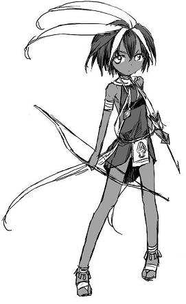

· 銀焰是驅逐魔鬼的光明之力。那些試圖保護無辜者免受邪惡侵害的人便能汲取銀焰的力量。
· 所有凡人的靈魂都能找到光明。故而要激勵和引導他人做出高尚的行為；把動用武力視為最後的手段。
· 傾聽銀焰的聲音；但要防備銀焰中的暗影所傳來的詭詐低語。
泰拉•麥倫(Tira Miron)*的故事在瑟雷恩婦孺皆知。曾經有一個古老而強大的惡魔被束縛在主物質界，幾個世紀之前，它破開了牢籠重返世間，給瑟雷恩的人民帶來了深重的苦難。如果不是泰拉•麥倫，這個國家早就被摧毀了。這位聖騎士受到銀焰的感召，與強大的惡魔展開激戰。當泰拉意識到惡魔尊主無法被消滅的時候，她選擇獻出自己的生命，將她的靈魂投入銀焰的輝光之中，以再次將惡魔封印。如今，泰拉成爲了銀焰之聲，幫助他人找到光明。任何試圖保護無辜者或是對抗邪惡的人，都可以獲得銀焰的協助，汲取到銀焰之力，但他們必須提防銀焰中的暗影，那是仍然徘徊不去、渴望把善良之人引入邪途的惡魔。
現代銀焰教會的中心是一根標誌著泰拉犧牲的銀色炎柱。這根炎柱位於銀焰堡，由銀焰顯化而成，但還遠非銀焰力量的本源。
銀焰教會的聖殿騎士們隨時準備著，要與亡靈、惡魔和異怪們戰鬥，要保護無辜者免受超自然的威脅。修士和牧師施行善事，在科瓦雷各地舉行慈善和公益活動，以此來對抗邪惡。和天命諸神不同的是，銀焰教會擁有明確的結構和教條。大主教負責監督各個教區；紅衣主教則領導著教會。銀焰教會權利的頂點是銀焰守護者，他坐鎮於銀焰堡的聖洗池，維繫著與泰拉•麥倫的交流。
終末戰爭對教會產生了嚴重的影響。教會的領導者們仍然尊重銀焰守護者在神學問題上的權威，但他們同時認為，戰爭無關善惡。各個國家的聖殿騎士們仍然會聯合起來對抗惡魔，但如果沒有超自然的威脅存在，他們會為自己的國家而戰。對這種割裂的默許使得銀焰教會的基本盤出現裂痕。在布魯蘭，有些牧師因貪婪而墮落，還有一些則與犯罪組織糾纏不清。在安黛爾，一群自稱為純凈之炎的狂熱分子認為憐憫不足以根除邪惡，暴力才應當是主要手段。而在瑟雷恩，教會已經成為統治機構。即便銀焰教會仍然恪守著泰拉所倡導的原則，救贖和犧牲，但政治的侵入意味著一些人成為信徒不再出於純粹的善心，而是意在謀求教會的權能。
在創造一個追隨銀焰的角色時，你需要決定他是與教會密切相關，抑或只是受教會理念的鼓舞。作為一名聖武士，他是聖殿騎士團的成員，還是一位受銀焰感召的農夫？
瑟雷恩是銀焰教會的信仰中心，但它的追隨者遍佈科瓦雷，在布魯蘭和安黛爾的勢力也很強大。純凈之焰教派的成員對某些種族持懷疑態度，特別是化獸者和幻身靈，但在信仰層面，銀焰認為所有種族應該攜手共進。
*前朝將Tira•Miron音譯為提拉•麥倫，但這個詞里兩個i都是開音節，按國際音標都發本音，因此發音應該是泰拉•麥倫，像提拉米蘇之類的發提音的都是舶來語，故做調整。
聖徽
銀焰教會的聖徽圖案是一團火焰，以鑲銀工藝製作。銀焰聖徽常常被蝕刻在銀製箭頭上，作為項鍊佩戴。
儀式
銀焰不需要祈禱或獻祭儀式；相反，銀焰禮拜的重心在於教區人民，鼓勵他們做出道德的行為。教徒應當嚴格遵守教會的等級制度，只有被任命的牧師才能主持禮拜。
對銀焰而言，射箭是一種虔誠的修行，既是一種冥想手段，也是一種武術。信奉銀焰的社群會開展箭術訓練，而村莊則會建有弓箭手民兵隊。
神廟
銀焰要塞在設計時就考慮了其作為聖殿騎士的軍營，以及對抗超自然威脅時作為庇護所的功能。教堂有著巨大的拱門和開闊的內部空間，聖殿地面以馬賽克鋪就，正中心矗立著一團燃燒著的火焰。
銀焰教會的中心是銀焰堡大聖堂。這座堅固的神廟以泰拉犧牲之地為中心建造，足足有一座小城那麼大。
引用
柯蘭堡文摘
銀焰小兒無信
YK993年，瑟雷恩任命一個6歲小兒成為教會最高領袖銀焰守護者，舉世震驚。如今潔拉•黛蘭（Jaela
Daran）已經11歲了，她依舊震驚著每位遇見她的人。潔拉擁有超越年齡的沉著和智慧，既勇氣十足，又富有同情心，而這正是信仰的基石。
作為銀焰守護者，她掌握著巨大的神聖力量；不僅能將天使召喚到身邊，還在紅衣主教哈利多（Halidor）遇刺之後將他復活。
但也有人聲稱這些故事都是捏造的，潔拉只是紅衣大主教克羅岑（Krozen）的傀儡。避世的克洛岑是一位傑出的戰略家，同時也是一位鐵血的領袖。許多人認為，YK992年銀焰守護者塔戈（Tagor）之死的幕後黑手正是克羅岑，這讓人不禁聯想到他扶植兒童成為銀焰守護者實際上是爲了鞏固自己的影響力。克洛岑會是銀焰教會帷幕之後真正的掌權者嗎？
-----------------以下是哈拉新增的私貨（來源3版的《五國》）-----------------
潔拉·黛蘭（JAELA DARAN），
銀焰守護者（KEEPER OF THE FLAME）
銀焰教會（Church of the Silver Flame）的精神領袖一直以來都是由一名——通常來說是由一名人類——一名有預言天賦的人類來擔當。主教評議會（Council of Cardinals）會接收全國各地關於神示者的報告，並選擇其中一位來擔當銀焰之聲（Voice of the Silver Flame）與瑟雷恩（Thrane）人民之間的媒介。會有一個委員會從騙子和假預言家中篩選出「被選中的人」，然而大多數情況下，命運會找到一種方式來讓這位精神領袖向銀焰堡（Flamekeep）的執政機構展示他或她自己。就目前來說，這名瑟雷恩的精神領袖同時還是它的世俗領袖——這對瑟雷恩的政府來說是一種不穩定的窘況。如果現任銀焰守護者凋零，則需要儘快找到替代者。
十一歲的潔拉·黛蘭出身卑微，是一名在銀焰堡工作的工匠的女兒。在四歲時，她表現出了一種能在災難發生前便做出預言的神秘能力。她的夢與噩夢是如此的令人信服與準確以至於她的父親聯繫了主教哈伽琪（Hagaci），而後者則將她帶至了銀焰教會進行測試。當潔拉被帶到銀焰面前時，銀焰警告她有一個砂主（Lords of Dust）的陰謀正在銀焰堡墻內悄悄地醞釀著。在這份情報的協助下，瑟雷恩騎士團（Knights of Thrane）定位並剷除了這些陰謀集團。主教評議會畢恭畢敬地接受了他們的新領袖，而潔拉的前任則下了臺。
潔拉·黛蘭已多次從決心顛覆瑟雷恩政府的敵對國家進行的暗殺陰謀中倖存了下來。她在銀焰教會墻內接受了大量的神學指導並且定期與銀焰之聲進行交談，而且經常取得瑟雷恩即將面臨考驗的神示預警。在她必須離開大聖堂的極少數情況下，對她所進行的保護措施都是詳細制訂的。目前的政治言論傾向於她在不幸事件中死亡時選擇另一個宗教領袖的看法，並且因此，許多人懷疑銀焰堡的評議會會任命大主教科洛森（Krozen）作為一名過渡時期的領袖。其他人則建議教會需要找到另一名神示者，以防止到時潔拉身上發生任何不幸的事情。
對於一個用預言改變了一個國家的歷史的年輕女孩來說，潔拉本人看上去相當的謙卑，虛心，和溫順。她經常在她執行銀焰之聲的計劃之前喚來主教和評議會們。除非獲得銀焰的啟示，否則主教評議會具有足夠的自治權去施行其認為合適的律法。在任何時候，一條來自銀焰之聲的預言，通過潔拉，都能夠使得主教的權威無效或繞行。

潔拉通常穿著簡單的灰色或黑色衣服，赤腳行走於大聖堂的大理石臺階上。她有著一雙灰色的眼睛，一頭剪短的黑頭髮，以及一身巧克力色的膚色。在大聖堂內，鮮少看見她有不與她那可怕的寵物，斯卡拉沃金（Skaravojen）在一起的情況。
還在等什麼？快來加入銀焰教會吧！